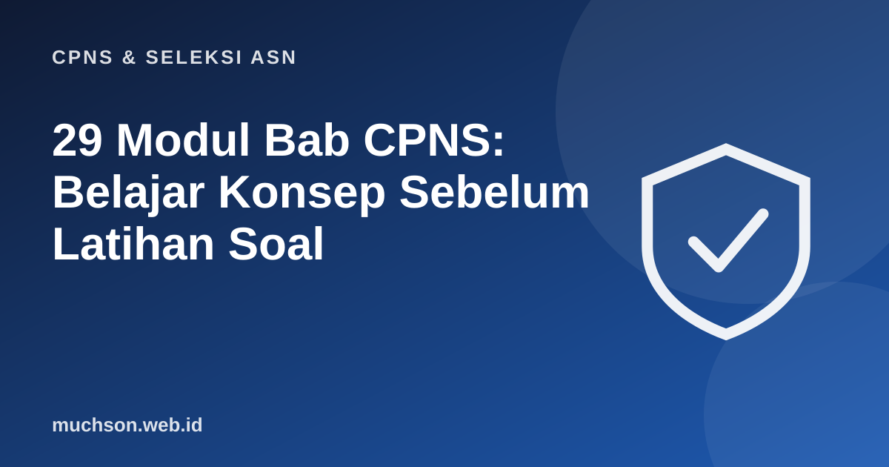

Beranda › Artikel › CPNS & Seleksi ASN
CPNS & Seleksi ASN29 Modul Bab CPNS: Belajar Konsep Sebelum Latihan Soal
Mengerjakan ratusan soal tanpa paham konsep ibarat menghafal peta tanpa tahu jalan. Modul bab melengkapi latihan: setiap modul menjelaskan konsep dengan diagram, memberi contoh bertahap, lalu latihan terpandu. Berikut isi 29 modul di LolosSeleksi, urutan belajarnya, dan cara memadukannya dengan latihan soal.

Apa isi satu modul
Setiap modul bab disusun dengan struktur yang sama supaya mudah diikuti: peta konsep yang memberi gambaran utuh, konsep dengan diagram SVG dan widget interaktif, contoh bertahap, latihan terpandu, dan ringkasan. Progres modul tersimpan, dan ringkasan PDF per bab tersedia gratis.
Deskripsi teks diagram
- Ringkasan: inti yang perlu diingat, tersedia sebagai PDF ringkas
- Latihan terpandu: soal dengan petunjuk bertahap
- Contoh bertahap: penyelesaian langkah demi langkah
- Konsep dengan diagram dan widget: penjelasan visual dan interaktif
- Peta konsep: gambaran besar bab
Daftar 29 modul menurut kelompoknya
| Kelompok | Jumlah | Modul |
|---|---|---|
| TWK | 7 | Pancasila, UUD 1945, NKRI dan Bhinneka Tunggal Ika, nasionalisme, integritas, bela negara, bahasa Indonesia |
| TIU | 10 | Verbal (analogi, silogisme, analitis), numerik (berhitung, deret, perbandingan, soal cerita), figural (analogi, ketidaksamaan, serial) |
| TKP | 6 | Pelayanan publik, jejaring kerja, sosial budaya, TIK, profesionalisme, anti-radikalisme |
| PPPK | 3 | Manajerial, sosio-kultural, wawancara PPPK |
| BUMN | 3 | Core values AKHLAK, English, TKD BUMN |
Struktur kelompok TWK, TIU, dan TKP mengikuti materi SKD yang tertulis di KepmenPANRB 406/2026: TWK (nasionalisme, integritas, bela negara, pilar negara, bahasa negara), TIU (verbal, numerik, figural), dan TKP (pelayanan publik, jejaring kerja, sosial budaya, TIK, profesionalisme, anti radikalisme).
Deskripsi teks diagram
- TWK: 7 modul
- TIU: 10 modul
- TKP: 6 modul
- PPPK: 3 modul
- BUMN: 3 modul
Urutan belajar yang disarankan
- Mulai dari bab yang paling lemah menurut tryout awal atau peta kemampuan, bukan dari nomor pertama.
- Baca modul sampai ringkasan, lalu kerjakan latihan terpandu. Jangan melompat ke soal sebelum paham kerangka.
- Kerjakan satu set 20 soal latihan bab untuk menguji pemahaman.
- Ulang modul hanya bagian yang membuat salah. Tidak perlu membaca semuanya lagi.
- Kembali lewat latihan harian agar materi tidak lupa.
Coba latihan per bab dan tryout SKD gratis di LolosSeleksi; rapor tryout menaut langsung ke modul bab yang perlu dipelajari.
Tanya jawab
Berapa jumlah modul bab?
Apakah modul gratis?
Perlu membaca semua modul dulu sebelum latihan soal?
Apakah modul sesuai materi SKD resmi?
Apakah progres modul tersimpan?
Referensi
- Keputusan Menteri PANRB Nomor 406 Tahun 2026 tentang Nilai Ambang Batas SKD Sekolah Kedinasan (JDIH KemenPANRB, 27 Juli 2026) (membuka tab baru)
- Halaman harga LolosSeleksi: isi paket gratis dan berbayar (membuka tab baru)
- Halaman latihan per bab LolosSeleksi (membuka tab baru)